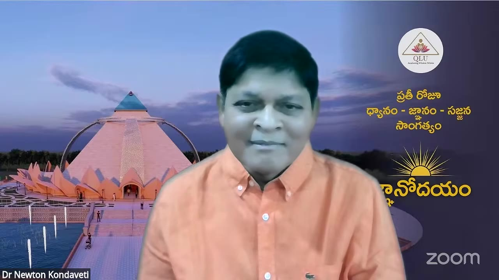

01 · ఈ నెల ఆధ్యాత్మిక జ్ఞానసారం · పూర్తి కథనం
మనలోని సురాసుర స్వభావాలు — స్వర అపస్వరాల వెనుక దాగిన జీవన సత్యం
ఈ రోజు సురులు, అసురులు ఎవరో తెలుసుకుందాం. వారు ఎక్కడో పురాణాల్లో మాత్రమే లేరు; మనలోని సద్గుణాలు, దుర్గుణాలు, సమతుల్యత, అసమతుల్యతల రూపంలోనే ఉన్నారు. శ్వాసలోని స్వరాన్ని అర్థం చేసుకోవడం నుంచి త్రిగుణాలను గమనించడం వరకు, మహాదుర్గ–మహాలక్ష్మి–మహాసరస్వతి శక్తుల సాధన నుంచి మన నిజమైన కోరికను గుర్తించడం వరకు ఈ రోజు అనేక అంశాలు తెలుసుకుందాం.
ప్రసంగకర్త: బ్రహ్మర్షి చక్రవర్తి డా. న్యూటన్ కొండవీటి
అంశం: దేవీ నవరాత్రుల జ్ఞానం — సురాసుర తత్త్వం నుంచి ఇచ్చాశక్తి, సమర్పణ వరకు
మూల వీడియో: https://www.youtube.com/watch?v=CgTrk319L1Q
01. సురులు, అసురులు — స్వరం తప్పితే అపస్వరం
మనం మాట్లాడేటప్పుడు, పాడేటప్పుడు ‘స్వరం’, ‘అపస్వరం’ అనే మాటలు ఉపయోగిస్తాం. ఒక సందర్భంలో మాట్లాడవలసిన మాట మాట్లాడకపోతే అపస్వరం అంటాం. సంగీతంలో లయ తప్పితే అపస్వరం వస్తుంది. అలాగే జీవితంలో కూడా ఒక లయ, క్రమం, అనుసంధానం ఉండాలి.
మన శరీరం, మనసు, హృదయం, ఆత్మ — ఇవన్నీ ఒక అనుసంధానంలో ఉన్నప్పుడు మనం సమతుల్యంగా జీవిస్తాం. ఈ అనుసంధానం కోల్పోతే మనలో అపస్వరం మొదలవుతుంది. ఈ భావాన్ని సురులు, అసురులు అనే పురాణప్రతీకల ద్వారా అర్థం చేసుకుందాం.
ఇది ఒక ఆధ్యాత్మిక పదార్థవ్యాఖ్యానం. ‘సుర’, ‘అసుర’ పదాల చారిత్రక వ్యుత్పత్తిని నిర్ధారిస్తున్నామని కాదు; మనలోని సామరస్యాన్ని గుర్తించడానికి ఈ పోలికను ఉపయోగిస్తున్నాం.
02. శ్వాసే స్వరం — జీవన లయను గమనించడం
మన శ్వాసే మనకు అత్యంత సమీపంలో ఉన్న సాధన. శ్వాస ద్వారా మనం మాట్లాడతాం; శరీరంలోని అనేక క్రియలకు అది ఆధారమవుతుంది. ప్రాణశక్తి గురించి మాట్లాడేటప్పుడు కూడా శ్వాసకు ప్రత్యేక ప్రాధాన్యం ఇస్తాం.
శ్వాసను గమనిస్తే మనం ప్రస్తుత క్షణానికి చేరువవుతాం. శరీరం, మనసు, హృదయం మధ్య అనుసంధానాన్ని అనుభవించడానికి ఇది సహాయపడుతుంది. శ్వాసలోని సహజ లయను గమనించడం ద్వారా మన అంతరంగ స్థితిని తెలుసుకోవచ్చు.
శ్వాసను మార్చడానికి తొందరపడకుండా, ముందుగా శ్వాసను గమనించండి. ధ్యానం ద్వారా మనలోని అపస్వరాలను గుర్తించి సామరస్యాన్ని పెంపొందించుకోవచ్చు.
03. పుట్టుక కాదు — ఆత్మజ్ఞానమే గొప్పతనానికి ప్రమాణం
రావణాసురుడి కథను చూడండి. అతడు తపస్సు చేశాడు, సంగీతంలో ప్రావీణ్యం కలిగి ఉన్నాడు, ఎన్నో విద్యలు నేర్చుకున్నాడు. అయినప్పటికీ అతనిలో అహంకారం, మమకారం, హింసాప్రవృత్తి ఉన్నాయి. జ్ఞానం లేదా తపస్సు ఉన్నంత మాత్రాన మన ప్రవర్తన దైవికంగా మారిపోదు.
పుట్టుక ఆధారంగా ఎవరినీ ఆధ్యాత్మికంగా ఉన్నతులుగా నిర్ణయించలేం. బ్రహ్మజ్ఞానాన్ని అనుభవించి, సర్వజీవులలో ఒకే ఆత్మను దర్శించే స్థితి ముఖ్యమైనది. ‘సర్వం ఖల్విదం బ్రహ్మ’ అనే అనుభూతితో జీవించినప్పుడు మన పనులు లోకకల్యాణం వైపు సాగుతాయి.
నిరంతర సాధన, సేవ, అందరి మేలును కోరుకోవడం — ఇవే దైవిక గుణాలుగా పెంపొందించుకోవాలి.
04. త్రిగుణాలు — తమస్సు, రజస్సు, సత్త్వం
మనలో తమోగుణం ఎక్కువైనప్పుడు సోమరితనం, హింసాప్రవృత్తి, అహంకారం, చేయాల్సిన పనిని వాయిదా వేయడం వంటి లక్షణాలు కనిపించవచ్చు. ఏదైనా చేసినా ‘నన్ను అందరూ ప్రశంసించాలి’ అనే కోరిక మనల్ని నడిపించవచ్చు.
రజోగుణం అధికమైనప్పుడు కీర్తి, ప్రతిష్ఠ, గుర్తింపు, విజయాల కోసం నిరంతరం పరుగెత్తవచ్చు. పని చేయడం తప్పు కాదు; గుర్తింపు కోసం ఆరాటపడుతూ మనశ్శాంతిని కోల్పోవడమే సమస్య. కోపం వచ్చిన తర్వాత తగ్గినా, మళ్లీ అదే కోపం తిరిగి రావచ్చు.
సత్త్వగుణాన్ని పెంపొందించుకోవడం అంటే మనలో స్పష్టత, సమతుల్యత, సేవాభావం, అంతర్ముఖత పెరగడం. మనం ఎలాంటి స్థితిలో ఉన్నామో గమనించుకోవడం సాధనలో మొదటి అడుగు.
ముఖ్యమైన జ్ఞానం: అసురత్వాన్ని బయట వ్యక్తుల్లో వెతకడానికి ముందు, మనలోని అహంకారం, మమకారం, హింస, కీర్తికాంక్ష, కోపం ఎలా పనిచేస్తున్నాయో గమనించాలి.
అంతరంగంలో కిరీటాన్ని తీసివేసిన రాజు
రజోగుణం గురించి ఒక గురువు–రాజు కథ గుర్తుచేసుకుందాం. ఆత్మజ్ఞానం కోసం రాజు ఆశ్రమానికి వెళ్లాడు. బంగారు కిరీటం, కవచాలు, ఆభరణాలతో గురువును దర్శించాడు. ‘నీ మీద ఉన్న భారాన్ని తొలగించు’ అని గురువు చెప్పగానే రాజు కిరీటాన్ని, కవచాలను తీసివేశాడు. కానీ గురువు ఉద్దేశం అవి కాదు. ‘నేను రాజును, నేను గొప్పవాడిని’ అనే మనసులోని కిరీటాన్ని తీసివేయాలి. బయట ఆభరణాలను వదిలినా లోపలి ప్రతిష్ఠాభిమానాన్ని వదలకపోతే సాధనలో ముందుకు సాగడం కష్టం.
అలాగే కొద్దిరోజులు కోపం రాకుండా నియమం పాటించినా, లోపల కోపానికి కారణమయ్యే ధోరణిని విడిచిపెట్టకపోతే అది మళ్లీ వస్తుంది. కాబట్టి మార్పు బాహ్య నియమంలో మాత్రమే కాకుండా మనసులోని మమకారాన్ని విడిచిపెట్టడంలో ఉండాలి.
05. సురాసుర యుద్ధం మనలోనే జరుగుతోంది
పురాణాల్లో సురులకు, అసురులకు మధ్య యుద్ధాలు జరుగుతుంటాయి. ఆ కథలను కేవలం బయట జరిగిన సంఘటనలుగా చూడకండి. మనలోని రెండు ప్రవృత్తుల మధ్య జరుగుతున్న పోరాటాన్ని కూడా అవి గుర్తుచేస్తాయి.
ధ్యానం చేస్తున్నప్పటికీ మనలో కోపం, అసూయ, అహంకారం, అతిమమకారం ఉండవచ్చు. ఒకరోజు శాంతిగా ఉంటాం; మరొకరోజు చిన్న సంఘటనకే కోపం వస్తుంది. ఇదే మనలోని పోరాటం.
ధ్యానం అంటే మనలోని దైవిక స్వభావానికి దగ్గరవడం. మనలో ఏ గుణాలు పెరుగుతున్నాయి? ఏవి మనల్ని మన నుంచి దూరం చేస్తున్నాయి? ఈ ప్రశ్నలు నిరంతరం వేసుకోవాలి.
06. రావణుడి కథ — సాధన ఉన్నా హద్దులు దాటకూడదు
రావణుడు గొప్ప తపస్సు చేశాడు. అయినా సీతామాతను ఆమె సమ్మతి లేకుండా తీసుకెళ్లడం ద్వారా హద్దులు దాటాడు. ఇతరుల స్వేచ్ఛను, సమ్మతిని గౌరవించకపోవడం అసురప్రవృత్తికి ఉదాహరణ.
మనకు ఎంత శక్తి, జ్ఞానం, సామర్థ్యం ఉన్నా, వాటిని ఎలా వినియోగిస్తున్నామన్నది ముఖ్యం. ఆధ్యాత్మిక సాధన మనల్ని మరింత వినయంతో, బాధ్యతతో జీవించేలా చేయాలి.
07. నవరాత్రుల మూడు దశలు — మహాదుర్గ, మహాలక్ష్మి, మహాసరస్వతి
నవరాత్రుల్లో మూడు ప్రధాన శక్తులను గుర్తుచేసుకుంటాం.
మొదటి మూడు రోజులు — మహాదుర్గ: మనకు దుర్గమంగా కనిపించే ఆటంకాలు, పరిమితులు, పునరావృతమయ్యే ఇబ్బందులను అధిగమించేందుకు ఇచ్చాశక్తిని మేల్కొల్పుకోవడం.
తదుపరి మూడు రోజులు — మహాలక్ష్మి: మనలోని దైవిక గుణాలను, ఆత్మవిశ్వాసాన్ని, అవసరమైన అంతర్గత వనరులను, సమృద్ధి భావాన్ని పెంపొందించుకోవడం.
చివరి మూడు రోజులు — మహాసరస్వతి: ఆత్మజ్ఞానం, స్పష్టత, వివేకం వైపు ప్రయాణించడం.
ఈ మూడు దశలను ఒకే ఆధ్యాత్మిక ప్రయాణంగా చూడాలి: అడ్డంకులను గుర్తించి అధిగమించడం; సద్గుణాలను పెంపొందించడం; జ్ఞానంలో స్థిరపడడం.
08. అమ్మను ఎందుకు ఆశ్రయిస్తాం?
చిన్నప్పుడు మనకు ఏదైనా కావాలంటే ముందుగా అమ్మ దగ్గరకు వెళ్లేవాళ్లం. బాధ వచ్చినా, దెబ్బ తగిలినా, ఏదైనా సమస్య వచ్చినా అమ్మతో చెప్పుకునేవాళ్లం. నాకు చిన్నప్పుడు బొమ్మ కావాలంటే నాన్నను నేరుగా అడగడం కష్టంగా అనిపించేది. అమ్మ దగ్గరకు వెళ్లి అడిగేవాడిని; అమ్మ ఏదో విధంగా నాన్నతో మాట్లాడి సహాయం చేసేది.
ఆ అనుబంధాన్ని ఇప్పుడు జగన్మాతతో కలుపుకుందాం. మనలోని ఆటంకాలను, బాధలను, పరిమితులను ఆ శక్తికి సమర్పిద్దాం. మహాదుర్గ అంటే కష్టమైన మార్గాన్ని దాటించగల శక్తి అనే భావంతో సాధన చేద్దాం.
ఇక్కడ అమ్మ అంటే కేవలం బయట ఉన్న దేవత కాదు. మనలోనే ఉన్న ఆదిశక్తిని గుర్తుచేసుకుంటున్నాం.
మనకు మనం దగ్గరవడమే సురత్వం
మనకు మనం, మన ఆత్మస్వరూపానికి ఎంత దగ్గరవుతున్నామో అదే సురత్వమని మరో విధంగా చెప్పుకోవచ్చు. ‘నేను కేవలం ఈ దేహమే’ అని భావిస్తూ బాహ్య ఆకర్షణల్లో మునిగితే మనకు మనమే దూరమవుతాం. అందచందాలు, ధనం, వస్తువులు మారిపోతాయి. వాటితోనే ‘నేను’ అనే గుర్తింపును కట్టుకుంటే అహంకారం, మమకారం, రాగద్వేషాలు పెరుగుతాయి. ధ్యానం మనల్ని మన ఆత్మస్వరూపానికి దగ్గర చేసే సాధన.
మనసుకు, సామాజిక మాధ్యమాలకు ఉపవాసం
ఈ తొమ్మిది రోజుల్లో ఉపవాసం అంటే ఆహారాన్ని తగ్గించడం మాత్రమే కాదు. మైండ్ ఫాస్టింగ్ — అనవసర ఆలోచనలను తగ్గించి అంతర్మౌనంలో ఉండటం; సోషల్ మీడియా ఫాస్టింగ్ — రీల్స్, నిరంతర ఫోన్ వినియోగం, బయట వినోదాల నుంచి కొంత విరామం తీసుకోవడం. మన సమయాన్ని, శక్తిని సాధనకు వినియోగించుకుందాం. ప్రసంగంలో భోజన పరిమాణాన్ని తగ్గించుకోవడం కూడా ప్రస్తావించారు; అయితే ఆరోగ్య అవసరాలను బట్టి ఆహారాన్ని నిర్ణయించుకోవాలి. ముఖ్యంగా పిల్లలు, గర్భిణులు, మధుమేహం లేదా ఇతర ఆరోగ్య సమస్యలున్నవారు ఆహార ఉపవాసాన్ని వైద్యసలహా లేకుండా చేయకూడదు.
09. ఇచ్చాశక్తి — శక్తికి దిశ ఇవ్వాలి
మనకు కోరికలు ఉండడం తప్పు కాదు. కోరికలు లేకపోతే కార్యాచరణకు ప్రేరణ ఎలా వస్తుంది? కానీ మన కోరికల వెనుక ఉన్న అసలు అవసరాన్ని తెలుసుకోవాలి.
మనలో ఉన్న ఆటంకాలు ఏమిటి? ఏ సమస్యలు మళ్లీ మళ్లీ వస్తున్నాయి? ఏ పరిమితుల వల్ల మన సాధన ముందుకు సాగడం లేదు? వాటిని స్పష్టంగా గుర్తించండి.
మన శక్తికి ఒక దిశ అవసరం. అందుకే లక్ష్యాలు రాసుకోవాలి. జీవిత లక్ష్యం ఇంకా స్పష్టంగా తెలియకపోయినా, ఇప్పుడు మనం ఏ దిశగా ఎదగాలనుకుంటున్నామో నిర్ణయించుకోవాలి. దిశ లేకుండా శక్తిని చెల్లాచెదురు చేయకూడదు.
లోకకల్యాణం కోసం చేసే పనుల్లోనూ ఇచ్చాశక్తి అవసరం. ధ్యానప్రచారం, శాకాహార ప్రచారం, సేవాప్రాజెక్టులు — ఏ పని చేసినా సంకల్పంతో, కార్యాచరణతో ముందుకు వెళ్లాలి.
10. మన కోరిక వెనుక అసలు కోరిక ఏమిటి?
‘నాకు ఏమి కావాలి?’ అని మనల్ని మనం ప్రశ్నించుకుందాం. మొదట చెప్పే సమాధానం మన నిజమైన కోరిక కాకపోవచ్చు. దాని వెనుక మరో కోరిక ఉంటుంది. ఆ కోరిక వెనుక మరో అనుభూతి ఉంటుంది.
ఉదాహరణకు, ‘మా కుటుంబ సమస్య పరిష్కారం కావాలి’ అంటాం. ఎందుకు? ‘మనశ్శాంతి కావాలి.’ మనశ్శాంతి ఎందుకు? ‘నేను మరింత ధ్యానం చేసుకోగలను.’ ధ్యానం ఎందుకు? ‘నాతో నేను ఉండగలను.’ అప్పుడు ఏ అనుభూతి కలుగుతుంది? ఆత్మానందం, ఆత్మతృప్తి.
ఈ విధంగా ప్రశ్నలు వేసుకుంటూ లోతుకు వెళ్లాలి. బయట కనిపించే కోరిక నుంచి మన అంతరంగం నిజంగా కోరుకుంటున్న స్థితి వరకు ప్రయాణించాలి.
ఆత్మపరిశీలన: ‘ఇది నెరవేరితే నాకు ఏమి లభిస్తుంది?’ అనే ప్రశ్నను మళ్లీ మళ్లీ వేసుకుంటే, మన కోరిక వెనుక ఉన్న అనుభూతి స్పష్టమవుతుంది.
11. పాల్గొన్న సాధకురాలి ఉదాహరణ — కుటుంబ స్థిరత్వం నుంచి ఆత్మతృప్తి వరకు
ఒక సాధకురాలు తన భర్తకు మంచి ఉద్యోగం, ఉన్నత స్థానం రావాలని కోరుకుంటున్నట్లు చెప్పారు. ఆయనకు అర్హతలు ఉన్నాయని, కుటుంబం స్థిరపడితే తాను ఆధ్యాత్మికంగా మరింత ఎదగగలనని భావిస్తున్నట్లు వివరించారు.
ఈ కోరికను పరిశీలిస్తూ ఒక ప్రశ్న వేశాం: భర్తకు మంచి ఉద్యోగం వచ్చినప్పుడు మీకు నిజంగా ఏమి కలుగుతుంది? కుటుంబ స్థిరత్వం, ఆందోళన తగ్గడం, సాధనకు సమయం, చివరకు ఆత్మతృప్తి — ఇవన్నీ ఆ కోరిక వెనుక ఉన్నాయి.
అంటే బయట మనం కోరేది ఉద్యోగం కావచ్చు; లోపల మనం కోరేది తృప్తి, శాంతి, ఆత్మానందం కావచ్చు. మన అసలు లక్ష్యం స్పష్టమైనప్పుడు సంకల్పాన్ని మరింత అవగాహనతో వినియోగించుకోగలం.
12. గురువులు, సంకల్పాలు, ఆధ్యాత్మిక కోరికలు
కొన్ని కోరికలు భౌతిక జీవితానికి సంబంధించినవి. మరికొన్ని ఆధ్యాత్మిక సాధనకు సంబంధించినవి: జ్ఞానోదయం పొందాలి, ముక్తిని అనుభవించాలి, మూడవ కన్ను గురించి తెలుసుకోవాలి, ఉన్నత ఆధ్యాత్మిక స్థితులను అనుభవించాలి.
లాహిరీ మహాశయులు, మహావతార్ బాబాజీకి సంబంధించిన ఒక ఆధ్యాత్మిక కథను ఉదాహరణగా ప్రస్తావించాం. ఆ కథలో గురువు శిష్యుని కోరికను తీర్చే సందర్భాన్ని, కోరికలను అధిగమించే ఆధ్యాత్మిక ప్రయాణానికి ప్రతీకగా చూడవచ్చు. ఇది సంప్రదాయ ఆధ్యాత్మిక కథనం; చారిత్రకంగా ధృవీకరించిన సంఘటనగా ఇక్కడ పేర్కొనడం లేదు.
మన సంకల్పం ఎంత గొప్పదైనా, దాని వెనుక ఉన్న ‘నాకు నిజంగా ఏమి కావాలి?’ అనే ప్రశ్నను మర్చిపోకూడదు.
13. మహాదుర్గకు సమర్పణ — తొమ్మిది నమస్కార చక్రాలు
రెండవ రోజు నేర్చుకున్న దేవీ సమర్పణ సాధనను ఈ రోజు మళ్లీ గుర్తుచేసుకుందాం. కూర్చునే భంగిమ, ఎడమ–కుడి నాసికలతో చేసే శ్వాస సాధన, నమస్కారముద్ర, శిరస్సు వంచడం, మనసులో ‘శ్రీం’ బీజాక్షర స్మరణ — ఈ అంశాలను మళ్లీ ప్రదర్శించారు.
ప్రవచనంలో తొమ్మిది చక్రాలు చేయమన్నారు. ప్రతి చక్రంలో ముఖ్యమైనది శరీర కదలిక కాదు; అహంకారాన్ని విడిచి జగన్మాతకు సమర్పిస్తున్నామనే భావం. మన కోరికలను, ఆటంకాలను, సంకల్పాలను మహాదుర్గ పాదాల చెంత ఉంచుతున్నామని భావించాలి.
సాధన పూర్తయిన తరువాత మౌనంగా, నిశ్చలంగా కూర్చుని ఆ సమర్పణ భావాన్ని అనుభవించాలి.
భద్రతా గమనిక: మూల ప్రదర్శనలో నాసికారంధ్రాన్ని మూయడం, విడతలుగా శ్వాస తీసుకోవడం, శ్వాస నిలుపు, తలను వంచడం వంటి పద్ధతులు ఉన్నాయి. ఇవి అందరికీ సురక్షితం కావు. మెడ, వెన్నెముక, గుండె, శ్వాస సమస్యలు లేదా తలతిరుగుడు ఉన్నవారు నిపుణుల ప్రత్యక్ష మార్గదర్శకత్వం లేకుండా ప్రయత్నించకూడదు. సహజ శ్వాసతో సౌకర్యంగా కూర్చుని సమర్పణ భావాన్ని అభ్యసించవచ్చు.
14. సమర్పణతో పాటు కార్యాచరణ కూడా అవసరం
మన కోరికలను జగన్మాతకు సమర్పించామంటే మనం చేయాల్సిన పని చేయకూడదని కాదు. మన బాధ్యతను మనం నిర్వర్తించాలి. సంకల్పానికి అనుగుణంగా చిన్నదైనా కార్యాచరణ చేయాలి.
మిగిలినదాన్ని ఆ శక్తికి సమర్పిస్తున్నామనే విశ్వాసంతో ముందుకు సాగాలి. ఈ భావన మనలో భయాన్ని తగ్గించి, మనకు సాధ్యమైన పనిని స్పష్టంగా చేయడానికి సహాయపడుతుంది.
‘సమర్పణ’ అంటే నిష్క్రియ కాదు; సాధన, సంకల్పం, కార్యాచరణ, అంగీకారం కలిసి ఉండాలి.
15. ప్రశ్నోత్తరాలు — కుటుంబ ఆస్తి, ఐక్యత, లోకకల్యాణం
ఒక సాధకురాలు కుటుంబానికి సంబంధించిన ఆస్తి వ్యవహారాన్ని వివరించారు. ఐదుగురు అక్కచెల్లెళ్ల మధ్య ఐక్యతతో ఆ వ్యవహారం పరిష్కారమై, దాని ద్వారా లోకకల్యాణానికి ఉపయోగపడే పని జరగాలని కోరుకున్నారు. ఆర్థిక సమృద్ధి, శాంతి, మోక్షం కూడా తమ సంకల్పాల్లో ఉన్నాయని చెప్పారు.
ఈ సందర్భంలో మనం గుర్తుంచుకోవాల్సింది — బాహ్య వ్యవహారాల పరిష్కారం కోరుకోవడంలో తప్పు లేదు; అయితే మన అంతరంగంలో శాంతి, ఐక్యత, సేవాభావం కూడా పెరగాలి. ఆధ్యాత్మిక సంకల్పం బాధ్యతాయుతమైన కుటుంబ సంభాషణకు, అవసరమైన ప్రాయోగిక చర్యలకు తోడుగా ఉండాలి.
16. పిల్లల అనారోగ్యం — ‘శిక్ష కాదు, శిక్షణ’ అనే ప్రశ్న
నాగవేణి గారు ఒక ముఖ్యమైన ప్రశ్న అడిగారు. ‘కర్మలు శిక్ష కాదు, శిక్షణ’ అని మనం చెబుతాం. కానీ చిన్నపిల్లలకు తీవ్రమైన లేదా దీర్ఘకాలిక అనారోగ్యాలు వస్తే, వారికి ఆధ్యాత్మిక అవగాహన ఉండదు కదా? అలాంటప్పుడు దానిని శిక్షణగా ఎలా అర్థం చేసుకోవాలి?
సమాధానంలో, పిల్లలను ధ్యానానికి బలవంతం చేయకూడదని స్పష్టంగా చెప్పారు. తల్లిదండ్రులు తాము ధ్యానం చేస్తూ ఉదాహరణగా నిలిస్తే పిల్లలు చూసి నేర్చుకోవచ్చు. వారికి స్వేచ్ఛ ఇవ్వాలి. పెద్దల ప్రవర్తన పిల్లలపై ప్రభావం చూపుతుంది.
అలాగే, ఆత్మ జన్మకు ముందు తన పాఠాలను ఎంచుకుంటుందనే ఆధ్యాత్మిక విశ్వాసాన్ని వివరించారు. ఇది ప్రవచనంలోని ఆధ్యాత్మిక దృష్టికోణం మాత్రమే; పిల్లల వ్యాధులకు కారణాన్ని నిర్ధారించే వైద్య వివరణ కాదు.
ముఖ్యమైన స్పష్టీకరణ: పిల్లల అనారోగ్యం వారి తప్పు, గత కర్మల శిక్ష లేదా వారు ఎంచుకున్న బాధ అని నిర్ధారించరాదు. వారికి అవసరమైన వైద్యసేవ, ప్రేమ, సంరక్షణ, సహాయం అందించడం పెద్దల బాధ్యత.
చిన్నారుల సంరక్షణలో పెద్దల పాత్ర
నాగవేణి గారి ప్రశ్నకు సమాధానంగా చిన్నారులు తల్లిదండ్రులు, ఉపాధ్యాయుల సంరక్షణలో నేర్చుకుంటారని వివరించారు. పిల్లలలో ఆరోగ్య సమస్యలు వచ్చినప్పుడు వారికి అవసరమైన సంరక్షణను పెద్దలే అందించాలి అని చెప్పారు. ఆటిజం ఉన్న చిన్నారికి షరతుల్లేని ప్రేమ, సహనం, అర్థం చేసుకునే ధోరణి అవసరమని ఉదాహరణ ఇచ్చారు. పెద్దలు ధ్యానం చేస్తూ ఆదర్శంగా ఉంటే పిల్లలు స్వచ్ఛందంగా అనుకరించవచ్చని, ధ్యానం చేయమని బలవంతం చేయకూడదని స్పష్టంగా చెప్పారు.
ప్రవచనంలో కర్మ, పునర్జన్మ, గతజన్మ సంబంధాలు, కుటుంబ సభ్యులు కలిసి సృష్టించుకున్న పరిస్థితుల గురించి కూడా ఆధ్యాత్మిక వ్యాఖ్యానాలు వచ్చాయి. ఇవి విశ్వాసపరమైన వివరణలు; పిల్లల వ్యాధులకు నిరూపిత కారణాలు కావు; పిల్లలపై లేదా తల్లిదండ్రులపై నింద మోపడానికి ఉపయోగించరాదు. వైద్యసహాయం, అభివృద్ధి సంబంధిత మద్దతు, కుటుంబ సంరక్షణ మొదటి ప్రాధాన్యాలు.
17. గురువుల శక్తి, ఇతరుల స్వేచ్ఛను గౌరవించడం
తదుపరి చర్చలో మహనీయ గురువుల గురించి, వారి సమక్షంలో జరిగినట్లు చెప్పబడే అద్భుత అనుభవాల గురించి మాట్లాడారు. నీమ్ కరోలీ బాబా వంటి గురువులను ప్రస్తావించారు. అయితే ప్రతి జీవాత్మ ప్రయాణాన్ని, స్వేచ్ఛను గౌరవించాలి అనే భావాన్ని కూడా చెప్పారు.
అద్భుత కథనాలను ఆధ్యాత్మిక సంప్రదాయంలో చెప్పబడిన అనుభవాలుగా చూడాలి. అవి వైద్యచికిత్సను, శాస్త్రీయ పరిశీలనను భర్తీ చేయవు.
18. దేవీస్తుతి — సంగీతంతో ముగింపు
ప్రశ్నోత్తరాల అనంతరం దేవీమాతను స్తుతించే గానం జరిగింది. ‘ఓంకార రూపిణి’, ‘క్లీంకార వాసిని’, ‘ప్రకృతి స్వరూపిణి’ వంటి పదాలు శీర్షికల్లో వినిపిస్తాయి. గానం ద్వారా జగన్మాత సాన్నిధ్యాన్ని స్మరించుకుంటూ కార్యక్రమం ముగిసింది.
సంపాదకీయ గమనిక: పాటలోని కొన్ని పదాలు స్వయంచాలక క్యాప్షన్లలో అస్పష్టంగా ఉన్నాయి. తప్పులతో కూడిన సాహిత్యాన్ని పునర్ముద్రించకుండా గానం జరిగిన విషయాన్ని మాత్రమే నమోదు చేశాం.
ఈ రోజు మనం జీవితంలో ఆచరించాల్సిన జ్ఞానం
సురాసురులు మనలోనే ఉన్నారు. శ్వాసలోని లయను గమనించాలి. అహంకారం, మమకారం, కోపం, కీర్తికాంక్ష వంటి ప్రవృత్తులను గుర్తించి, సేవ, సమతుల్యత, ఆత్మజ్ఞానం వైపు సాగాలి. మహాదుర్గ శక్తితో ఆటంకాలను అధిగమించేందుకు సంకల్పించాలి; మహాలక్ష్మి శక్తితో సద్గుణాలను పెంపొందించాలి; మహాసరస్వతి శక్తితో జ్ఞానాన్ని వికసింపజేయాలి. మన కోరికల వెనుక ఉన్న నిజమైన ఆత్మతృప్తిని గుర్తించి, సమర్పణతో పాటు మన బాధ్యతను నిర్వర్తించాలి.